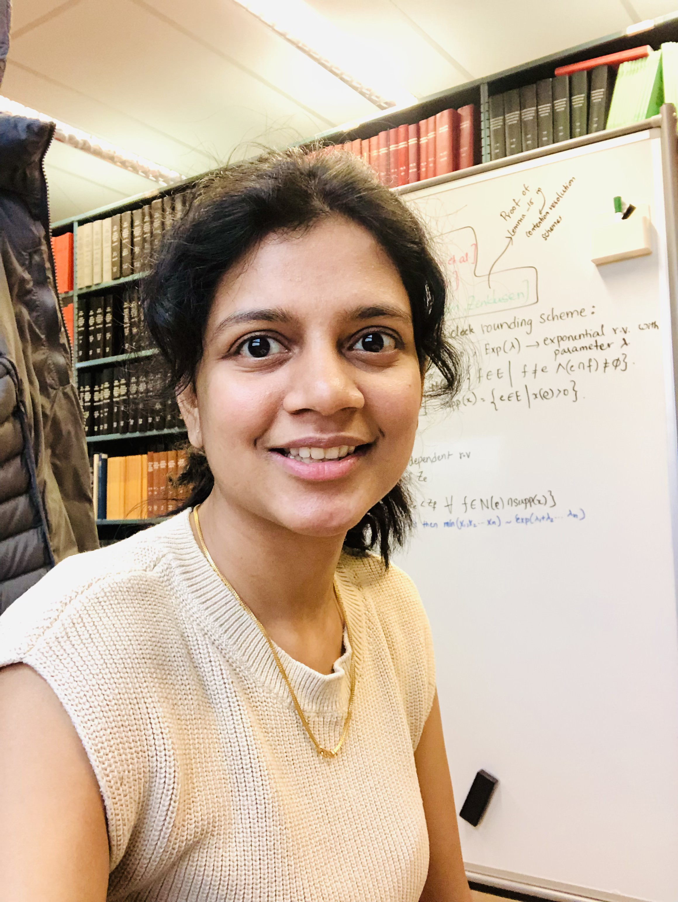

I am an Applied Scientist on the Core Matching & Optimization team at Uber. I completed my Ph.D. in the Computer Science department at the University of Maryland, College Park, where I was fortunate to be co-advised by professors Aravind Srinivasan and John P. Dickerson. My Ph.D. thesis, titled "Algorithmic Fairness and Online Decision Making in Combinatorial Optimization and Unsupervised Learning," focused on designing fair algorithms with provable guarantees for classical combinatorial and clustering problems. Prior to that, I was a Graduate Research Assistant at the Computer Science department at Stony Brook University, where I was very lucky to be advised by Prof. Rezaul Chowdhury. My Master's thesis focused on the reusable resource-allocation problem.
I am broadly interested in algorithmic fairness for combinatorial problems, particularly in the design and analysis of fair algorithms for a wide variety of classical problems like graph matching, set covering, set packing, and clustering. My past research has focused on incorporating probabilistic generalizations of group and individual fairness into combinatorial problems and designing algorithms with provable guarantees.
My ongoing work extends this line of research to combinatorial optimization and machine learning under uncertainty, where the information available about the problem instance — group memberships, item valuations, or user preferences — is stochastic, incomplete, or unreliable. This includes designing matching and clustering algorithms that remain robust when membership or preference data is uncertain, and studying market mechanisms like barter exchange under asymmetric or privately held valuations.

News
- [Jun 2026] Attended the Dagstuhl Seminar on Randomized Rounding in Algorithms, Statistics, and Economics and Computation.
- [Feb 2026] Our paper Concentration of Submodular Functions and Read-k Families Under Negative Dependence is published in Algorithmica.
- [Jan 2026] Graduated with a Ph.D. from the University of Maryland, College Park and joined Uber's Core Matching & Optimization team as an Applied Scientist.
- [Jan 2026] Our paper Barter Exchange with Asymmetric Item Valuations is accepted to The Web Conference 2026.
- [Oct 2025] Gave an invited talk, “Fair Matching,” at Reed College.
- [Aug 2025] Our paper ProcVQA: Benchmarking the Effects of Structural Properties in Mined Process Visualizations on Vision–Language Model Performance is accepted to Findings of EMNLP 2025.
- [Jan 2025] Our paper Robust Fair Clustering with Group Membership Uncertainty Sets is accepted to AISTATS 2025.
- [Dec 2024] Our paper Proportionally Fair Matching Algorithms via Randomized Rounding is accepted to AAAI 2025 as an oral presentation.
- [Nov 2024] Our paper Concentration of Submodular Functions Under Negative Dependence is accepted to ITCS 2025.
- [Jan 2024] Our paper Barter Exchange with Shared Item Valuations is accepted to The Web Conference 2024.
- [Jun 2023] Started a summer Applied Scientist internship at Optum Labs (UNH), working on deep representation learning for partially annotated multi-label clustering of medical dialogues, advised by Dr. Carlos W. Morato.
- [Apr 2023] Our paper Group Fairness in Set Packing Problems is accepted to IJCAI 2023.
- [Dec 2022] Our paper titled Rawlsian Fairness in Online Bipartite Matching, Two-sided, Group and Individual got accepted to AAAI 2023!
- [Aug 2022] I was at the KDD poster session for our paper on Fair Labeled Clustering at KDD 2022, Washington D.C.
- [May 2022] I started my summer internship with Pan Xu from NJIT on online matching problems.
- [Jan 2022] Our paper Rawlsian Fairness in Online Bipartite Matching, Two-sided, Group and Individual (extended abstract) is accepted to AAMAS 2022.
- [Jan 2022] Our paper Online Minimum Matching with Uniform Metric and Random Arrivals is accepted to Operations Research Letters.
- [Dec 2020] Our paper Improved MapReduce Load Balancing through Distribution-Dependent Hash Function Optimization is accepted to ICPADS 2021.
- [Jun 2019] Our paper Data Races and the Discrete Resource-Time Tradeoff Problem with Resource Reuse over Paths is accepted to SPAA 2019.
Community Service
AAAI (2026), NeurIPS (2026), SPAA, ESA (2025), WebConf. (2024, 2025, 2026), ICLR (2023), SODA (2019, 2023)